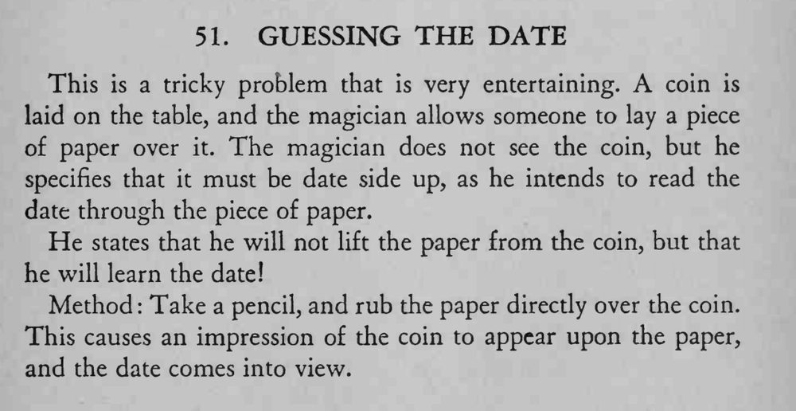

硬币被纸片盖住，魔术师不掀纸，却把硬币上刻的年份读了出来。
铅笔要侧着轻轻涂，纸不能太厚，拓印时硬币不能移动。

This is a tricky problem that is very entertaining. coin is laid on the table, and the magician allows someone to lay a piece of paper over it. The magician does not see the coin, but he specifies that it must be date side up, as he intends to read the date through the piece of paper. He states that he will not lift the paper from the coin, but that he will learn the date! Method Take a pencil, and rub the paper direcdy over the coin. This causes an impression of the coin to appear upon the paper, and the date comes into view.